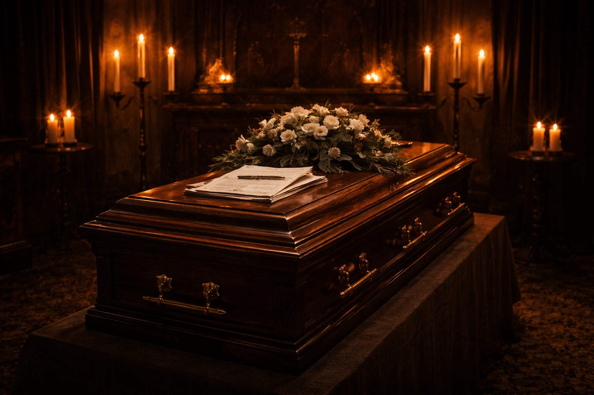

In 2010, Arran Coghlan and I were back in tandem defending a third murder charge. Stephen Akinyemi, a much-feared gangster from Cheetham Hill, Manchester, had been shot through the head at Mr Coghlan’s home address – a converted chapel in Alderley Edge, Cheshire.
It would be the application of criminal law, not Canon law, which would decide the fate of Arran. The police believed the killing to be a brutal revenge execution, which had at its roots the stabbing of Coghlan at a New Year’s Eve party in 2008 in a Stockport nightclub owned by Akinyemi. Arran ended up on a life support machine, but neither he nor any witnesses cooperated with the boys in blue, so no prosecution followed.
In recent times, the two men had become friends, and, on occasion, they would be seen with their families enjoying meals in Manchester city centre.
The police were cock-a-hoop on discovering Akinyemi’s lifeless body in an en suite bathroom in the Chapel. He had suffered a fatal gunshot wound to his temple. No amount of prayers could salvage Arran from a 30-year plus prison sentence. Surely it was a slam-dunk?
Arran did not seek to hide his actions. It was he who called the police, requesting they attend the scene of the shooting. It was he who handed over the gun which he had placed on the garage floor for safety.
Arran himself required urgent medical assistance as he had suffered a stab wound to the neck of such ferocity that the Chapel’s wooden floors bore his bloodied footprints after the attack. The blood ran down his torso and oozed through his socks. I knew, from experience, no visitor was permitted to enter the Chapel without first removing their shoes.
The knife used in Arran’s stabbing was in the loose grip of Akinyemi. The police had dragged his body out of the en suite in a pointless attempt to resuscitate him.
Arran had a bevy of armed guards watching over him at Stepping Hill Hospital, Stockport. The reporting of the death of Akinyemi was major news in the North West. His followers, in Cheetham Hill and beyond, were demanding retribution. Social media was ablaze with death threats and associates of Coghlan went into hiding, fearing for their lives.
Upon being discharged from hospital, Arran was escorted in a police convoy to Middlewich Police Station in Cheshire. He sported a gruesome gash to his neck, but was fully prepared to adopt an aggressive stance in the interviews.
Prior to these commencing, we had a detailed debrief. After which, I had him sign a prepared statement. In this, he indicated the presence of Akinyemi at his home address was in order to resolve the use of the nickname ‘Aki’. To the Cheetham Hill enforcer, this was his gangland birth-right and Arran’s colleague, called Atkinson, must cease to use it – either voluntarily or in bloodshed. This issue, which was quite silly on one level, stemmed back to the trouble at the 2008 New Year’s Eve party. It had to be resolved once and for all.
Atkinson had agreed to be present at the meeting, albeit he was fearful of Akinyemi’s motives, but in the end he did not attend. Akinyemi felt slighted and he turned his anger on Coghlan. To the homeowner, it seemed Aki was high on drugs. This was later confirmed by the blood samples taken from the deceased.
Arran stated it was Akinyemi who had brought a gun, even though it had been agreed beforehand no weapons would be brought into the Chapel. In the tiny en suite, both men grappled for control. A violent struggle ensued in which bullets were discharged.
A few ricocheted off the bathroom tiles and two hit Akinyemi’s chest. However, the gangster, interestingly, had been wearing a bullet-proof vest. The final bullet was discharged into the temple of Aki, but not before he had produced a flick-knife from his back pocket and ruthlessly stabbed Arran in the throat, centimetres from his jugular vein.
At the commencement of the first interview, I read out this short statement and handed a signed copy to the interviewing officers. The battle lines had been drawn. It was either lawful self-defence or a pre-planned and choreographed execution.
Arran was able to take the high ground and mock the officers. He referenced his past at the hands of the North West police and their complete lack of interest in his cries of innocence. A police force which would have been popping champagne corks if it had been Coghlan laid out in the en suite’s boudoir.
The coppers did not buy their number one target’s story about being a peacemaker, vis-à-vis the disputed nickname. They had, after all, pursued two unsuccessful murder prosecutions premised upon him being a cold-blooded killer.
I sat agog as the two nominated coppers began filling the Chapel with the ghosts of imaginary accomplices. An illuminated light in the interview room testified to the fact senior officers were watching remotely via a video link and listening intently to every syllable uttered in the interviews. They knew the Outlaw’s abilities, but they believed even his skills would fail to extricate Coghlan from a 30-year jail term.
However, such was the profiling of Arran as a guilty man that the police actually did the heavy lifting for us. They believed at least one other person had been present within the Chapel assisting in this assassination. They claimed Akinyemi had attended with no weapons, there had been no violent struggle in the en suite and the bullets had been fired from a distance, not at close range. The knife wound had been self-inflicted and the bullet-proof vest had been wrapped around Akinyemi’s body after the final shot. In short, the crime scene had been stage-managed by Coghlan, the elusive evil theatre director.
It seemed to me, with this fixed mindset, no amount of dead bodies in the en suite would have achieved a coherent and forensically-led police investigation. The inevitable murder charge followed with Arran transported to CAT A HMP Manchester, under armed guard, to await his trial.
In early court hearings, our junior counsel, the wonderful Mr Christopher Harding, attempted to draw out the prosecution in order to get them to state exactly what their case actually amounted to. In contrast with the police’s robust stance in the interviews, the QC acting for the Crown wished to keep her powder a tad more dry. The High Court judge intervened and brought clarity to the prosecution.
“Either Mr Coghlan had a premeditated plan to execute Mr Akinyemi and hence staged the scene or…” there was a pause “Mr Coghlan would have been acting in lawful self-defence.”
As soon as the hearing had ended, I called for a transcript, as I knew that a simple summation of the case would be critical in due course.
There was, however, one piece of evidence which troubled me. During his detention at the police station, Arran had spoken to the Custody Sergeant. He was asking why he was being held in custody when he had simply ensured he had survived. He had stated “was I not meant to retaliate?”
The police had latched onto this, as had the Crown’s QC, mentioning it in early court hearings. She portrayed it as the accused, in an unguarded moment, accepting he had gone ‘over the top’. I could see how, during a trial before a jury, it would not be beneficial to the defence to dwell on this word.
One overcast morning whilst sipping a flat white in a café in Alderley Edge, I had a ‘belly-button’ moment. What was the English Dictionary’s definition of ‘retaliate’? Back in 2010, I possessed only a Nokia with a green and red button (one too many…) and no iPad. I rang Sue and asked her to rummage through the letter ‘R’ in the dictionary and call me back with the meaning of ‘retaliation’.
Minutes later, the Blackpudlian’s mobile rang with the cheeky tune of ‘Oh, I do like to be beside the seaside…’ and I punched the air with delight on being informed its meaning was:
“Meeting like with like.”
It was akin to a definition of self-defence. I penned a letter to the senior reviewing lawyer to demand the CPS’s perverse use of this word should cease. Mr Coghlan had stated no more than he had acted proportionately and- thus, in self-defence from the murderous attack by Akinyemi. The Crown confirmed it would drop this piece of evidence from its case. The prosecution was falling apart, both linguistically and, as you will later read, forensically.
Arran resolved to make a move of his own. As always, it would be bold and carefully planned. He penned an identical letter to send to both High Court judges who had charge of his case. One was dealing with the pre-trial hearings in Manchester as the trial judge, Justice Treacy, was engaged in a lengthy and complex drugs trial in Cardiff Crown Court.
Arran did not seek either the permission or input from either of his counsel. Neither Mr Stuart Denney QC, as lead counsel, nor Mr Harding as junior, could professionally give a green light to direct communications with judges from their lay client.
Arran, as you have read, is no shrinking violet so his letter departed CAT A and landed upon both judges’ desks. The purpose of the letter was to alert the judges to possible wrongdoing by the prosecuting authorities. Why should he alert the CPS after their conduct in R v Barnshaw? He had no faith whatsoever in their ability or wish to provide him with a fair trial process.
Arran stated a recording device had been left on a bedside cabinet, and it contained a conversation between him and Akinyemi in the days preceding the ‘ceremony’ in the Chapel. This taped conversation would prove the purpose of the meeting was to settle the use of the nickname ‘Aki’, that Atkinson would be present, and that his house had been chosen as neutral ground with no weapons being possessed by either man. Arran would be the mediator. At the end of the tape, he alleged, Aki had lowered his voice to a whisper and asserted:
“But if it is not resolved, I will kill him.”
The concern of the accused was that, to date, weeks into the case, no mention had been made by the Crown of this device, let alone its contents. Had it been suppressed or, worse, destroyed?
The letter was a tour-de-force. He was not expecting these red-robed judges to become ‘investigators’, but he was marking his territory. He was focusing judicial minds on events in R v Barnshaw and whether they were to ensure a repeat performance was not underway in relation to this recording device.
Knockout blows never happen in the first rounds of grave prosecutions. Winning comes after many body blows, when the defence team have been fearless in their approach and consistent in their allegations of misconduct. This letter was the first jab, not on the CPS, but on these judicial chins.
The Manchester judge simply sent Mr Coghlan’s letter to his instructing solicitors. It was a matter for them to deal with and he stressed he expected no more unsolicited letters from their CAT A inmate.
Treacy is a different beast. He would not bend to Coghlan’s will. He sent the letter directly to the CPS, even though the accused asked that this did not occur. He would not play footsie with Arran, nor place any barrier between himself and those who prosecute. Arran and I were greatly pleased with both these responses. The purpose had been to place the judges on high alert, to ensure they would play with a straight bat.
Our belief was confirmed, as, when we asked for the matter to be listed for an oral hearing, this was fixed for Cardiff Crown Court, not Manchester! Treacy wanted his mitts on every application. He wanted to be the judge who finally nailed Coghlan, but he would do so in a fair manner. He did not want any conviction to be capable of being successfully appealed.
After a long trip into deepest Wales, we duly convened in court. We stood up and bowed as Treacy took his seat. Denney QC covered quite a lot of ground before alighting upon the concerns cited in Arran’s letter.
The QC for the Crown rose to her feet in response and confirmed the recording device had been seized from the Chapel. It had been exhibited and, further, had been transcribed.
“But…there is no conversation on it between this defendant and Mr Akinyemi…” she paused for effect, but stated sternly “so there is nothing to disclose.”
Arran was appearing by video link from CAT A HMP Wakefield, where he was housed, and could be heard stating:
“Here we go again.”
Treacy did not have Arran down as a man who dealt in frippery. The letter he had sent must have a basis in fact.
“Where is the transcript?” Treacy succinctly asked.
This caught the Crown’s QC off guard, as she hoped her assurance there was nothing to disclose would end the matter.
“Ummm…I do have it, but it’s in the boot of my car, my Lord.”
“Like Barnshaw…” I whispered to my junior Lancastrian counsel, Mr Harding.
“Well,” announced Treacy, “I will stand the case down and you can retrieve it. Please supply a copy to Mr Denney and we will reconvene in thirty minutes.”
The legal Tectonic plates were on the move, triggered by Arran’s letter, as was the QC for the Crown to the local car park.
Shortly thereafter, Denney confirmed to me he had a copy transcript and there was indeed no conversation between the two men.
“Ask Treacy to order a copy of the original recording be served on us within seven days.”
Denney agreed, as did Arran when we convened with him via video link. He even took us to the point where the conversation should have been. It was directly after another meeting at his Wilmslow offices.
Treacy was happy to grant the order, albeit he extended the deadline to 14 days.
On the 14th day, the copy tape arrived in the morning post. I fast-forwarded to the place Arran had indicated it could be found. The hairs on the back of my neck stood up as I heard the voices of my client and the deceased. The conversation was exactly as per Arran’s letter to Treacy, including the whispered death threat at the end:
“I will kill him” rang in my ears. It was muffled, but it could be made out and it was uttered with menace. I was rooted to the spot as this type of scenario may be dreamt up for a film set, but in real life?
The CPS’s explanation? It had been another ‘cock up’! The digital tape must have jumped when it was being transcribed. In any event, the reviewing lawyer could not make out the whispered death threat. Maybe it was “until”, “nil”, “still”…anything but “kill”. The QC for the Crown brought the CPIA formally to its knees by claiming, even if she had known about the conversation it would not have passed the test for disclosure! Apparently this conversation, matching Arran’s prepared statement, could not assist the defence. As I forewarned you, disclosure is indeed “in the eye of the beholder”.
At the same time as the outing of the tape, I had found an old article in the Manchester Evening News in which it cited Akinyemi had been responsible for a murder. He had attended a friend’s house and, in front of witnesses, shot a man dead. This had not been disclosed by the CPS, no doubt because this equally failed to pass their sordid application of the CPIA test for disclosure. No prosecution followed as all the witnesses had a bout of amnesia – but it was treated as a solved crime.
The prosecution’s case, from evidence gathered within the Chapel walls, began to implode. Forensic reports they had commissioned from senior scientists began to land, and one by one, their ‘ghosts’ were busted:
From the bloodied footprints, it was confirmed no one else but Coghlan and Akinyemi were in the Chapel during the death roll.
From an examination of the en suite, there had been a violent struggle raging before the final fatal shot.
The order of events was that the knifing preceded the shot to the temple. Brain matter from the deceased sat atop the blood of Coghlan on the knife.
The deep wound to Coghlan’s neck could not have been self-inflicted – unless he had determined to take his own life. However, as C had proven, the knifing had occurred first in time.
The shots were not fired from over six feet away, as the firearms expert confirmed they had been discharged at close quarters.
The Crown’s assertion there was an imprint of the bloodied knife on the bed outside the scene of the shooting was false. It had thus remained in Akinyemi’s hand when he was dragged into the bedroom to be resuscitated, whether loosely gripped or not.
The defence pathologist had, in a second post mortem, found broken bones in Akinyemi’s neck consistent with having been placed in a headlock.
The bullet proof vest won by Akinyemi had not been wrapped around him after the fatal shooting. He had been wearing it during the battle, and the bullets which had entered it confirmed this must have been the case.
DNA from Akinyemi had been found in the chamber of the gun and on one bullet.
The conclusion from all the above is this incident had not been stage-managed. Even in laboratory conditions this forensic history could not have been repeated.
The prosecution case was seeping away when the final blow landed. A scientist had found a paint sample underneath the blood on the knife. The police, once more, swarmed the Chapel and its environs looking for a match. One was found, but it was daubed all over the bedroom of a house owned by Mr Stephen Akinyemi. There were indentations in the wall where ‘Aki’ had been honing his stabbing skills for deployment on errant debtors.
“There is a tide in the affairs of men, which, taken at its flood, leads to fortune. Omitted, all the voyages of their life are bound in shallows and in miseries. On such a full sea are we now afloat.” I adopted this Shakespearean directive when I penned a ruthless letter to the CPS demanding an end to this abusive prosecution. The Outlaw would copy Treacy in, harking back to Arran’s earlier unwelcome missive.
I emailed it to Chris H to approve. He advised it should be toned down “as that is what a High Court judge would expect.” The Outlaw refused, as, in the life and times of Mr Coghlan, temerity and obfuscation play no part. I ended the letter with a demand the prosecution be discontinued.
“Bluntness is all” I intoned to Chris. He much enjoyed the King Lear reference and accepted the letter “as is” could fly our coup.
Later the next day, around 3pm, a timid reviewing lawyer called me. He indicated he had read my letter and the Crown’s team were holding a conference. He floated the idea the Crown may be wishing to re-jig its case. I did not rise to the bait, but did comment R v Coghlan hardly needed more stage management. He sounded defeated:
“I will ring you back before 5pm with our decision, Mr Green.”
I smiled when later my mobile rang with an ‘0161’ (Manchester) landline number. The reviewing lawyer confirmed the outcome of their conference was the case would be discontinued. He would take steps to ensure the Governor of HMP Wakefield was notified, in order that Mr Coghlan could be released.
“Thank you” was all I could muster when I ended the call. It was a staggering moment in my legal career. Arran had made English legal history as the first defendant to be acquitted of three separate gangland murders. It had been the prosecution who had been slam-dunked after all.
In the week that followed his release, I watched him giving an interview in the Chapel to BBC News. I smiled when, far from being sheepish or guarded, he made clear anyone else entering his home with evil intent would exit in the same condition as Mr Akinyemi.
I end with just one moment from R v Coghlan, which stands as the best retort by any client in my 35 year career. Whilst he was under arrest at the police station, I was able to update Arran that social media was alive with death threats from the many followers of Mr Akinyemi in Cheetham Hill. They would not hesitate to murder Coghlan for despatching their leader.
Without pausing, Arran looked me in the eyes and stated:
“No need to worry Nick – there is no direct bus route from Cheetham Hill to Alderley Edge.’”
The laughter which followed must have unnerved the investigating officers, who were standing outside our interview room. I will leave the last words to Arran, when giving an interview to The Independent newspaper on his unique experience of the criminal justice system:
“I’ve always said the greatest crime is the inaction of a capable man.’”
Page 1 of 1